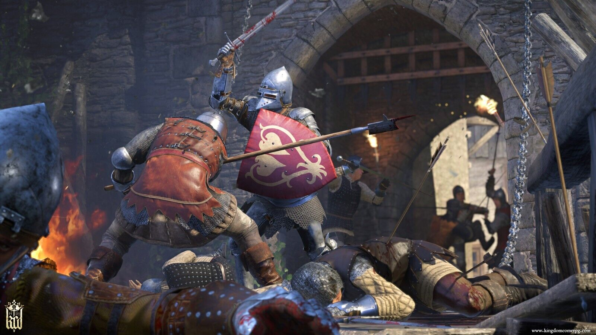

Ролевая игра с открытым миром в сеттинге средневековья. Действие разворачивается в 1403 году в королевстве Богемия на фоне конфликта между королём Вацлавом IV и его братом королем Сигизмундом, правителем Венгрии. Главный герой — кузнец Индржих, чья семья была жестоко убита в ходе набега половецких наёмников на шахтёрское поселение. Отправившись на поиски виновных, герой оказывается втянут в масштабный военный заговор, цель которого — свергнуть короля Сигизмунда и восстановить на троне его законного владельца — Вацлава IV. Kingdom Come: Deliverance позволяет игроку свободно путешествовать по доступной ему области средневековой Чехии, самостоятельно находя интересные места и задания.

Год выпуска: 2018
Разработчик: Warhorse Studios
Достоверность: 8/10
Разработчик: Warhorse Studios
Достоверность: 8/10